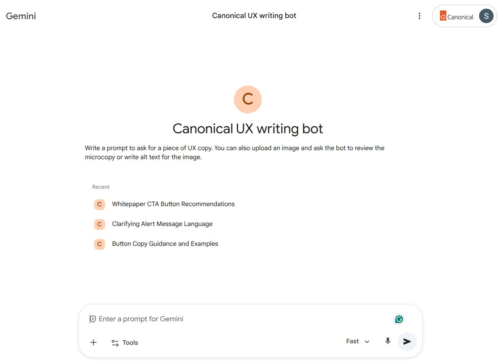
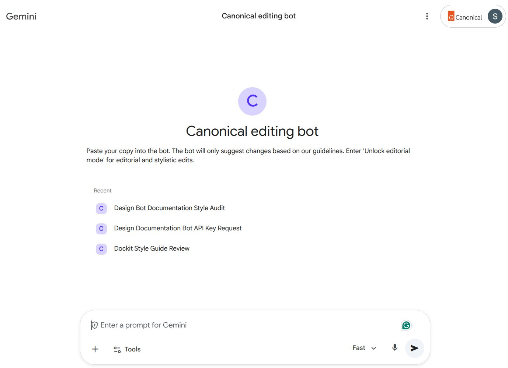

As the only content designer at Canonical, I was a bottleneck. Designers were writing UX copy and long-form content like newsletters and blog posts without a content reference they could use on their own. They'd come to me for copy checks, edits, and reviews. The real problem wasn't the volume of requests. It was that every review was a missed opportunity to build content capability in the team.
I identified the need, designed and built two Gemini Gems from scratch, and kept them updated based on direct designer feedback. I owned the whole process from problem framing to prompt engineering to monthly refinement. This wasn't a sanctioned project. I started it independently and let adoption make the case.
Canonical UX writing bot

A tool designers could use to write or review interface copy on their own. Every request returned three options, each grounded in UX best practices and Canonical's internal copy style guide. Every option came with a justification explaining which heuristic it followed and why. Designers weren't just getting copy. They were learning the reasoning behind it.
The Gem could also review screenshots of existing copy and suggest improvements with the same level of justification. After noticing that content writers were consistently skipping alt text or writing it poorly, I added an accessibility feature so designers could upload an image and ask the Gem to write or review alt text. This wasn't in the original scope. I added it because I saw the need.
Canonical editing bot

I built this one to reduce my review load on long-form content without taking ownership away from designers. Rather than correcting copy, the Gem flagged potential style guide violations and explained why each one was flagged. Passive voice, inconsistent terminology, tone deviations. The designer could decide what to do with that information. I also built in an "Unlock editorial mode" for designers who wanted fuller stylistic feedback beyond style guide compliance. The goal was a tool that taught, not just corrected.
I made a deliberate decision not to build tools that just gave answers. Autocorrecting copy would have made designers faster but not better. It also would have kept me in the loop indefinitely. By requiring both Gems to justify every suggestion, I turned productivity tools into learning tools. That was the core design decision.
- Manual first-pass editor for all long-form content
- Ad hoc UX copy requests designers could have handled independently
- Alt text written poorly or skipped entirely
- Every review kept me in the loop instead of building team capability
- Long-form content arrives in noticeably better shape before it reaches me
- Designers making more confident, independent copy decisions
- Alt text quality improved across the team
- Review time cut by more than half
- Iterated monthly based on feedback from at least 3 designers across multiple cycles
- Added alt text capability after identifying an accessibility gap not in the original brief
- Long-form content quality improved measurably before it even reaches review stage